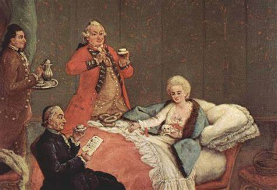

Famous Chocolate brands.
Chocolate became famous by the 18th century. Chocolate became more widely avaliable and affordable. By the late 19th century, chocolate became wide famous and people all around the world started buying different brands of chocolate like hershy's and more.
 <